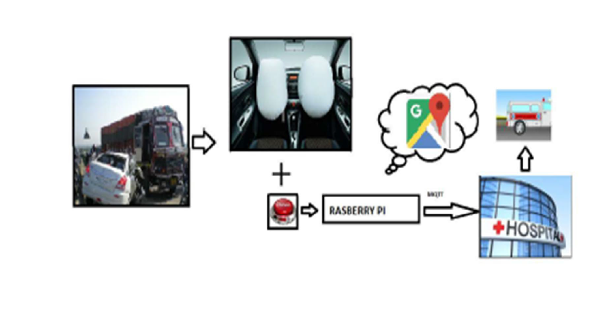
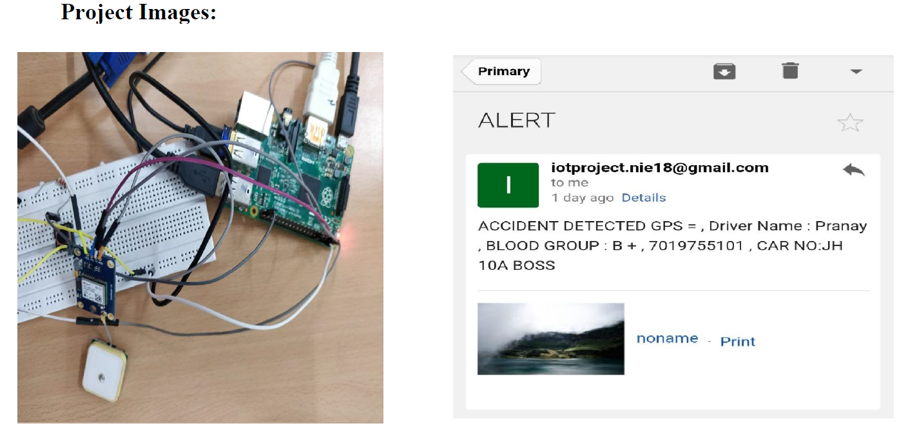

<div style="color:white">
<div class="MyIntro" style="padding: 0px;margin-bottom: 15px;box-shadow: 5px 5px 5px #444444;">
    <div style="background-color: #1f1f1f;padding:15px;margin-bottom: 10px;">Accidental Notification App</div>
    <div style="display: flex;padding-left: 5px;">
        <div style="display: inline-block;">
            <div>
                This project was made by group of 4 people.The project makes use of GPS module to detect the location of the nearest hospital from the accidental site 
                and sends important driver details like name, blood group, location of accidental site.
                Use RasberryPI microprocessor to configure the gps module and smtp protocol to send the mail updates.
                <div style="margin:3px">
                ABSTRACT :
                    Traffic accidents are one of the leading causes of victims all over the world. The level of
                    treatment or first-aid received at the accident spot is very low. Hence, an important indicator for
                    survival rates after an accident is the time between the occurrence of accidents and dispatching
                    time of emergency medical personnel to the accident spot. Internet of Things (IoT) plays the
                    major part in communication technologies, among which M2M application services is
                    considered an integral part. However, it brings several benefits to industries around the world
                    and has a wide range of applications such as logistics of data analytics, Smart grid sensor,
                    Health monitoring etc. As a result, IoT can be integrated to monitor automatic accident
                    notifications. The proposed system requires each vehicle to be endowed with M2M device in
                    On-Board Unit of vehicle, which is responsible for detecting the location of accident,
                    estimating the severity of accidents and reporting accident situations to an M2M server
                    application using the wireless technology. Then M2M server is responsible for allocating the
                    necessary resources for the rescue operation and sharing the information to other M2M devices
                    to give the victims a better chance and resources for survival, using Lightweight M2M
                    standards protocols. As a result, our system could notably reduce the time needed to alert and
                    deploy the emergency services after an accident took place
                </div>
                <h5>Block Diagram :</h5>
                
                <div>
                    The usecases covered by the projcts are:
                </div>
                <div>
                    <div>1.It helps to reach out to nearest hospital.</div>
                    <div>2. Its helps to reach out to the family member or friends.</div>
                    3.It can be very handy in the place where no other person is present other the than the
                    victim as everything is done automatically.
                </div>
                
            </div>
            <div><button style="background-color: #1f1f1f;margin:10px;margin-top: 15px;" (click)="onClick()">{{buttonText}}</button></div>
               <textarea [hidden]="!this.show" style="background-color: #1f1f1f;height: 600px;width:100%;">
def Mail_sent():
strFrom = 'iotproject.nie18@gmail.com'
strTo = 'iotproject.nie18@gmail.com'
msgRoot = MIMEMultipart('related')
msgRoot['Subject'] = 'ALERT'
msgRoot['From'] = strFrom
msgRoot['To'] = strTo
msgRoot.preamble = 'This is a multi-part message in MIME format.'
msgAlternative = MIMEMultipart('alternative')
msgRoot.attach(msgAlternative)
msgText = MIMEText('This is the alternative plain text message.')
msgAlternative.attach(msgText)
msgText = MIMEText('<b>evidence</b>Check image<br><br>',
'html')
msgText = MIMEText(email_body + '<br>', 'html')
msgAlternative.attach(msgText)
fp = open('img00.jpg', 'rb')
msgImage = MIMEImage(fp.read())
fp.close()
msgImage.add_header('Content-ID', '<image>')
msgRoot.attach(msgImage)
u='iotproject.nie18@gmail.com'
p='iotproject123'
smtp = smtplib.SMTP('smtp.gmail.com:587')
smtp.starttls()
smtp.login(u,p)
smtp.sendmail(strFrom, strTo, msgRoot.as_string())
            </textarea>
        </div>
    </div>
    <div style="display: flex;padding-left: 5px;">
        <div style="display: inline-block;">
            
        </div>
    </div>
</div>
</div>